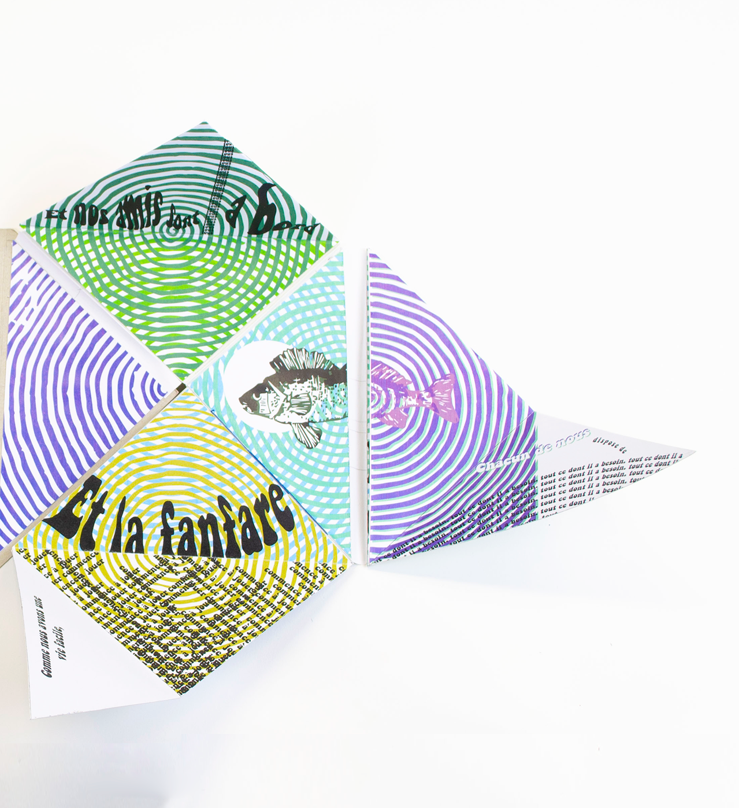
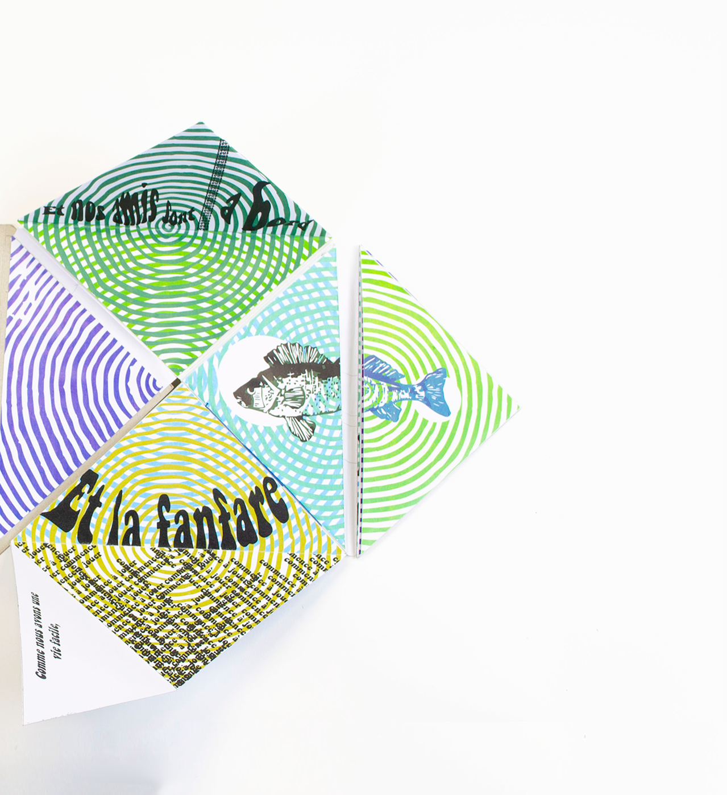
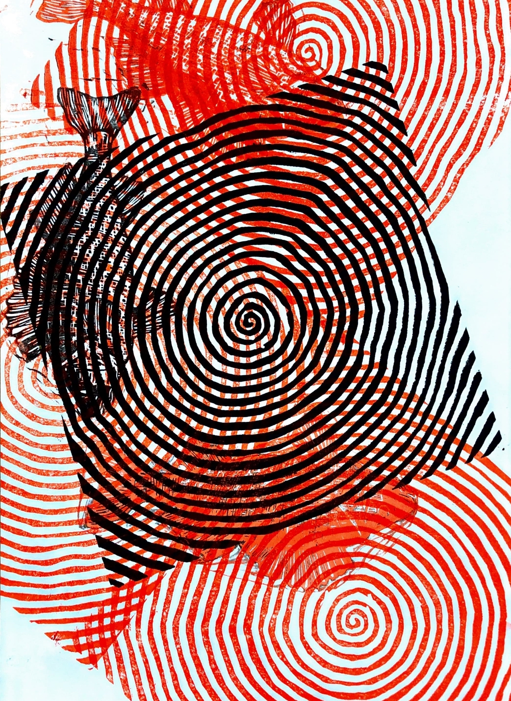
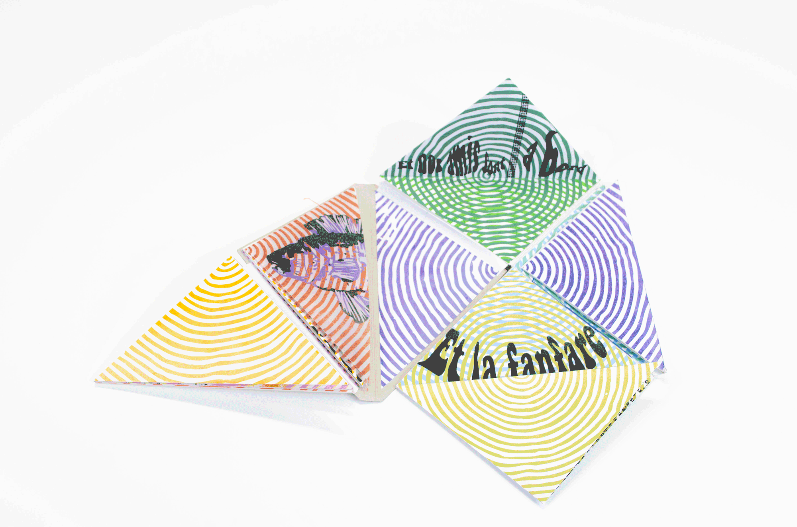
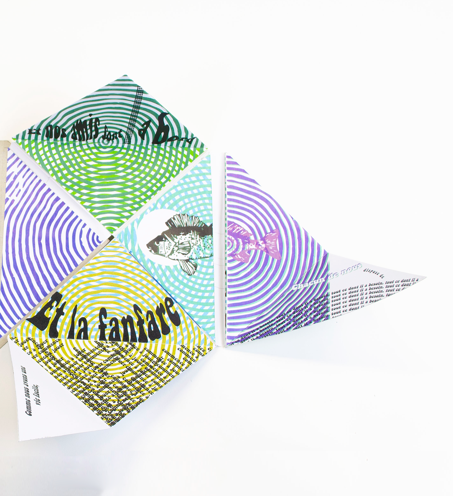
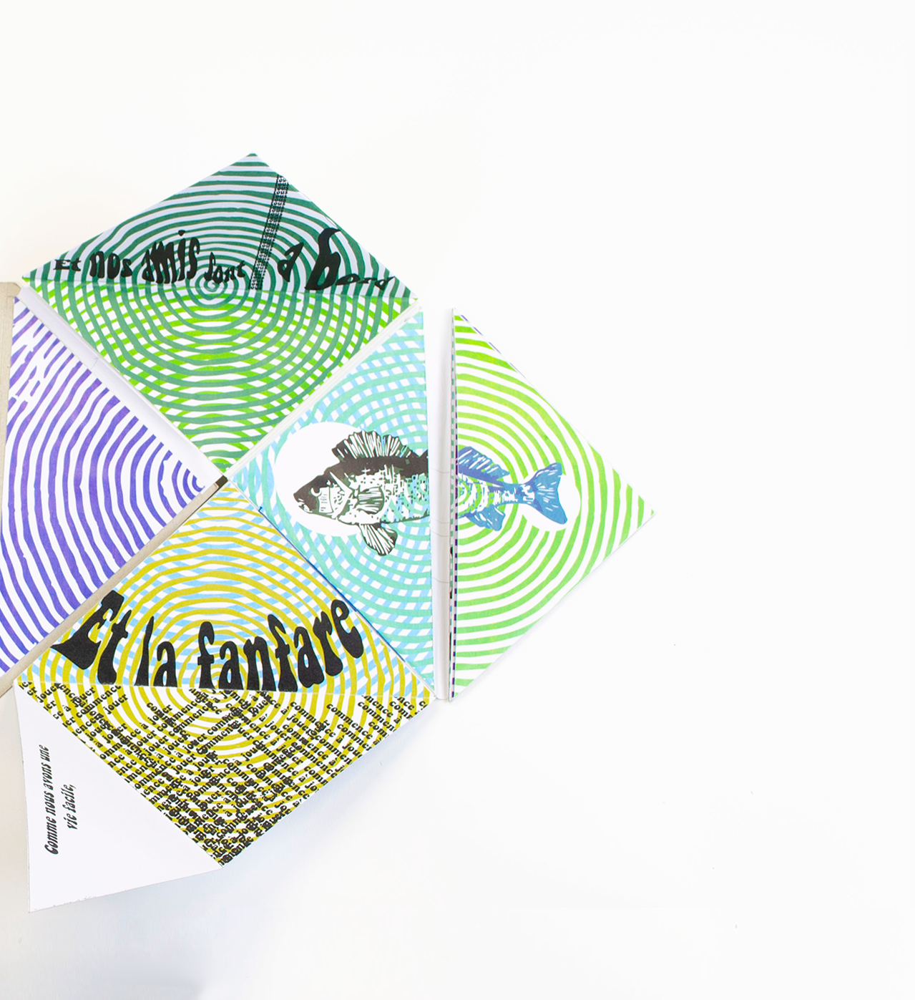
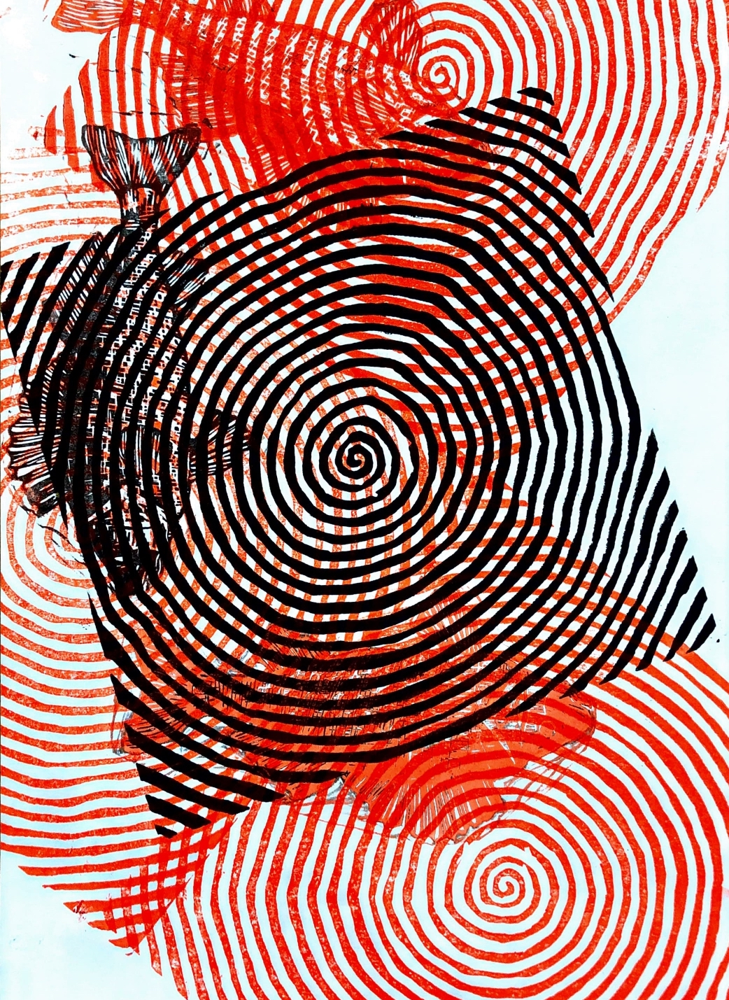
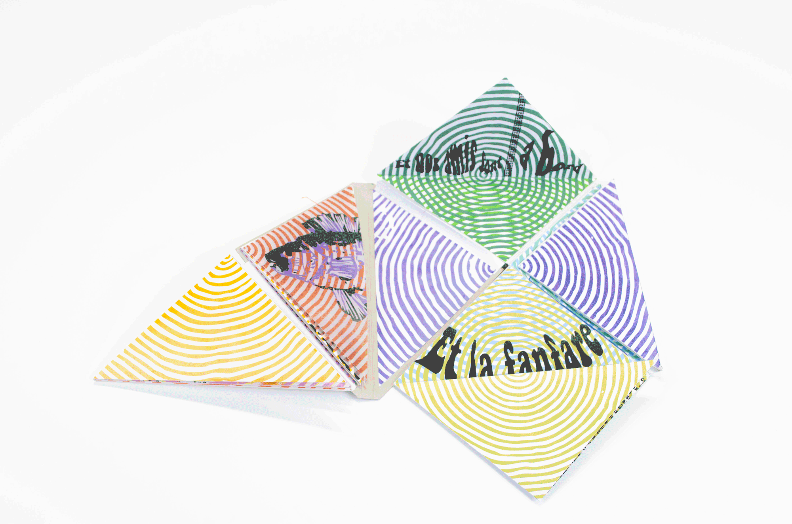

Réalisation d'un leporello
Branding pour une marque française qui propose des produits alimentaires à base de farines d'insectes. Ces derniers sont cultivés dans une ferme française et donnent des produits dont la fabrication est plus écologique que l'élevage de bétails par exemple. La marque doit encourager les consommateur•rices à faire entrer l'entomophagie dans leur alimentation quotidienne.
Les Protectors adopte un univers graphique qui conoque celui des super-héros. Cela permet de sous-entendre
 






